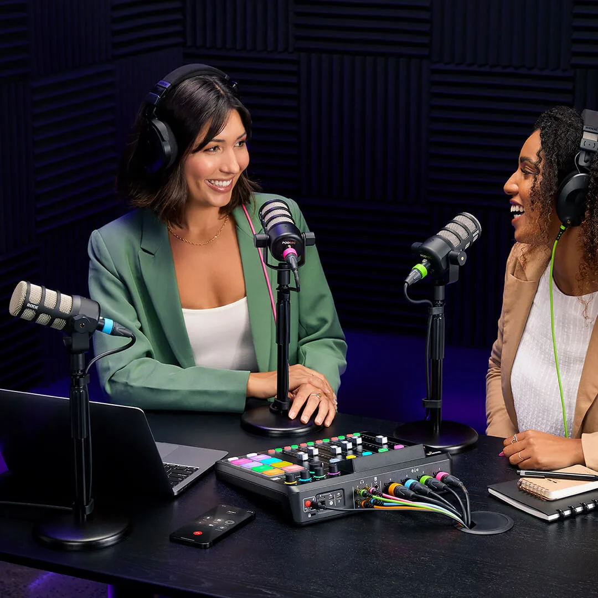
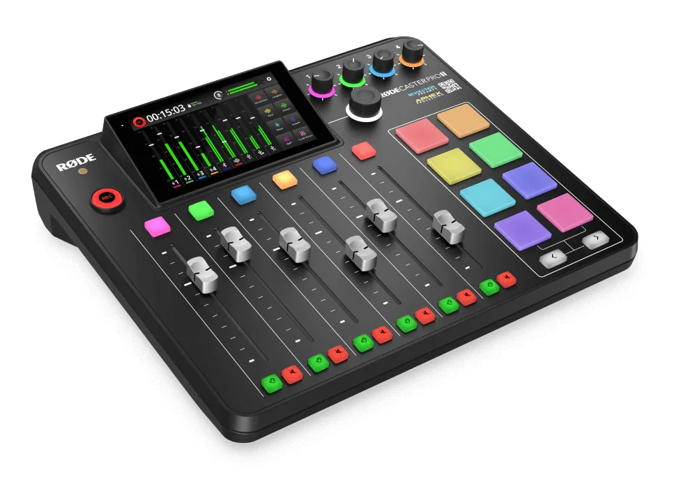

RØDE mobile studio
Our portable kit is built around the RØDECaster Pro II. We set it up at your office, event or chosen venue and run the session just as we would in the studio.
- Four microphone inputs for up to four people in the room
- Set up and sound-checked on location before you start
- Recording monitored throughout
